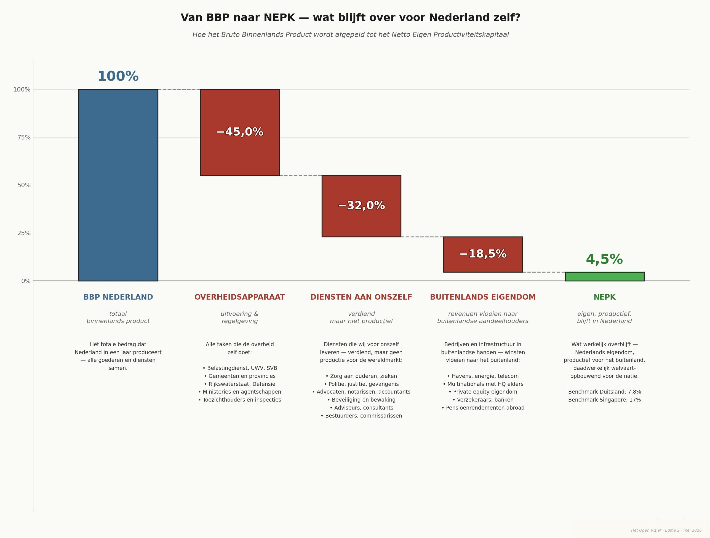

De NEPK-Klimaatlogica: Zelfversterkende Systeemcrisis
Waarom de Nederlandse economische implosie sneller gaat dan verwacht
Door Jacobus van Merksteijn · 22 min lezen · 28 mei 2026

Samenvatting: de kernconclusie
De Nederlandse Netto Externe Productieve Kern (NEPK) — de maatstaf voor het deel van de economie dat internationaal concurrerend produceert en exporteert — daalde van 9% in 2000 naar 5% in 2024. Op het eerste gezicht een geleidelijke erosie. In werkelijkheid een versnellend systeem dat zijn eigen val veroorzaakt.
Net als bij klimaatverandering activeren kleine veranderingen feedback-mechanismen die het proces exponentieel versnellen. Zonder ingrijpen bereiken we de kritische 3%-grens niet ergens rond 2040 — maar al in de vroege jaren '30.
Nederland moet vóór 2029 boven 3,5% NEPK blijven, anders wordt implosie onomkeerbaar.
Van BBP naar NEPK — wat blijft over voor Nederland zelf?
Het Bruto Binnenlands Product is wat Nederland in een jaar produceert. Maar het grootste deel daarvan vloeit terug naar het overheidsapparaat, naar diensten die we voor onszelf leveren, of naar buitenlandse eigenaren. Wat overblijft — het Netto Eigen Productiviteitskapitaal — is het deel dat werkelijk welvaart opbouwt voor de natie zelf.

Vergelijk dit met andere landen: Duitsland behaalt nog 7,8% NEPK, Singapore zelfs 17%. Nederland staat met 4,5% onderaan de zeven onderzochte landen. Daarom dit artikel: de NEPK-klimaatlogica laat zien waarom dit zo dringend is, en waarom afwachten geen optie meer is.
De Klimaatlogica: Hoe Systemen Zichzelf Versterken
Het klimaatsysteem kent een structureel kenmerk dat het politiek zo gevaarlijk maakt: het reageert niet met tegendruk maar met versterking. Kleine verstoringen activeren mechanismen die de verstoring vergroten. Vier klassieke voorbeelden:
IJsalbedo-feedback
Smeltend ijs → donkere oceaan absorbeert warmte → meer smelt → versnelling
Permafrost-methaan
Opwarming → methaan vrijgekomen → sterker broeikasgas → meer opwarming
Waterdamp-versterking
Warmere lucht → meer waterdamp → broeikasgas → meer opwarming
Bossenverlies
Droogte → minder CO₂-opname → meer CO₂ → meer opwarming → meer droogte
Kernkenmerk: Het systeem reageert niet met tegendruk maar met versterking — geen lineaire maar exponentiële versnelling na een kritisch punt. Precies dit patroon zien we terug in de Nederlandse economie.
Tipping Points & Point of No Return
Na een tipping point helpen kleine correcties niet meer. Het systeem is in een nieuwe, stabiele maar ongewenste toestand beland — onomkeerbaar, ook als beleid daarna verandert.
Klimaatwetenschappers hanteren drie bekende voorbeelden van zulke tipping points:
- Groenland-ijskap: bij 1,5–2°C onomkeerbare afbraak
- Amazone-regenwoud: bij te veel droogte kantelt naar savanne
- Golfstroom-collaps: bij te veel zoetwaterinput stopt oceaancirculatie
Dit principe geldt niet alleen voor klimaat — maar ook voor economische systemen. Een economie die zijn productieve kern verliest, kan die niet simpelweg terugkopen via beleidsaanpassingen.
De NEPK-Logica: Economische Klimaatverandering
De Nederlandse NEPK vertoont precies dezelfde structuur van zelfversterkende feedback-lussen als het klimaatsysteem. Drie lussen versterken elkaar en versnellen samen de neergang:
Economische spiraal
Kern krimpt → tarieven omhoog → meer bedrijven weg → kern krimpt verder
Controle-spiraal
Crisis → meer regels → overhead groeit → crisis verergert → nog meer regels
Sociale spiraal
Koopkracht daalt → zondebok-politiek → kapitaalvlucht → belastingbasis krimpt
De initiële verstoring is overhead-groei — net zoals CO₂ de initiële klimaatverstoring is. Maar het systeem versterkt die verstoring via drie parallelle kanalen tegelijk.
Politieke Verlamming als Brandstofreservoir
Net zoals permafrost enorme hoeveelheden methaan bevat die vrijkomen zodra de temperatuur stijgt, bevat de Nederlandse democratie politieke verlamming als versnellende brandstof. Elke maand zonder functionerende regering is extra "methaan" dat vrijkomt:
- Geen duidelijke koers → investeringen uitgesteld
- Ad-hoc noodmaatregelen → τ (collectieve-lastenverhoudingscoëfficiënt) stijgt zonder structurele hervorming
- Ambtenarij groeit ongecontroleerd door
De Exponentiële Curve: 2000–2024
De feitelijke NEPK-daling toont het patroon dat we in klimaatdata ook kennen: een schijnbaar trage fase gevolgd door versnelling die de eerdere curve doet verbleken.
| Periode | NEPK | Dalingstempo | Versnellingsfactor |
|---|---|---|---|
| 2000 | 9% | — | Baseline 1,0× |
| 2005 | 8% | 0,2%pt/jaar | — |
| 2010 | 7% | 0,2%pt/jaar | — |
| 2015 | 6% | 0,2%pt/jaar | — |
| 2020 | 5,3% | 0,14%pt/jaar | Schijnstabilisatie (corona-steun) |
| 2024 | 5% | 0,43%pt/jaar | Factor 2,0+ — exponentieel |
De ogenschijnlijk trage daling in 2017–2024 maskeert de onderliggende versnelling. Corona-steunpakketten stelden faillissementen uit en creëerden een kunstmatige buffer — die nu (2024–2026) verdwijnt.
De Drie Tipping Points van het Nederlandse Systeem
Het NEPK-systeem kent drie kritische drempelwaarden. Elk markeert een kwalitatieve sprong in de systeemrespons — geen graduele verslechtering maar een activering van nieuwe feedback-lussen.
5%-drempel — nu bereikt
2023–2024
Exit-mentaliteit dominant. 60% van ondernemers maakt zaak verkoopklaar. Focus verschuift van groei naar herverdeling. Collectieve lasten: 42%+, buitenlands eigendom: 45%+. Daling versnelt naar 0,25–0,35%punt/jaar.
3%-drempel — fiscale crisis
Verwacht 2029–2033
Collectieve lasten stijgen naar 48–50%. Buitenlands eigendom boven 55–60%. Schuld/bbp boven EU-normen, structureel tekort >3%. Daling versnelt naar 0,4–0,6%punt/jaar. Media-narratief "revolutie tegen de rijken" krijgt draagvlak. Systeem nadert point of no return.
2%-drempel — point of no return
Risico 2033–2037
NEPK 2–2,5%. Collectieve lasten boven 55%, schuld/bbp mogelijk boven 100%. Massale kapitaalvlucht. Confiscatoire maatregelen: exit-taxen 50%+, vermogensbelasting 2%+, nationalisaties. Nederland wordt lage-productiviteit economie, afhankelijk van EU-transfers. Dit is het equivalent van Groenland-ijskap-verlies: onomkeerbaar, ook als beleid daarna verandert.
Het Democratie-Paradox
De democratie die het systeem zou moeten repareren, is zelf een versnellingsmechanisme geworden. Drie structurele mechanismen versterken de NEPK-erosie:
Fragmentatie → Blokkade
Meer partijen → langere formaties → geen structurele hervormingen
Macht zonder verantwoordelijkheid
Ambtenaren beschermen eigen domein → overhead groeit automatisch
Zondebok-dynamiek
Versnipperde politiek → hogere lasten op resterende kern → spiraal
De data: formatieduur versus NEPK-daling
| Periode | Gem. formatieduur (dagen) | NEPK-daling (%pt/jaar) | Noot |
|---|---|---|---|
| 2000–2010 | 80 | 0,20 | Baseline |
| 2010–2017 | 100 | 0,14 | — |
| 2017–2024 | 200 | 0,04 | Kunstmatig laag (corona-buffer) |
| 2024–2030 | 200 (prognose) | 0,43 | Buffer verdwijnt; versnelling zichtbaar |
De schijnbaar lage daling 2017–2024 is kunstmatig door corona-steunpakketten. Zonder die buffer zou de daling al 0,25–0,35%punt/jaar zijn geweest. Elke 100 extra formatiedagen correleert met +0,10%punt/jaar extra NEPK-daling.
Projectie 2024–2034: Van 5% naar 2% in Tien Jaar
Twee scenario's voor de komende tien jaar. Beide leiden tot een dramatische neergang — het verschil zit in het tempo.
| Jaar | Baseline-scenario NEPK | Schok-scenario NEPK |
|---|---|---|
| 2024 | 5,0% | 5,0% |
| 2026 | 4,6% | 4,5% |
| 2028 | 4,0% | 4,0% |
| 2030 | 3,3% | 3,0% |
| 2032 | 2,7% | 2,2% |
| 2034 | 2,1% | 1,5% |
Baseline: progressieve versnelling zonder externe schokken. Schok-scenario: 2–3 zware externe schokken (energie-crisis, financiële crisis, geopolitieke spanning) versnellen implosie naar 1,5% in 2033.
Dit verklaart het schok-scenario: van 3% (2029) naar 1,5% (2033) in slechts 4 jaar.
Parameters 2024–2034
Drie modelparameters — α (alpha), τ (tau) en φ (phi) — beschrijven de systemische toestand. α staat voor productieve efficiëntie, τ voor de collectieve lastenverhouding en φ voor het aandeel Nederlands eigendom in de kern.
Productieve efficiëntie neemt af door groeiende compliance-overhead
Collectieve lasten nemen toe om de krimpende basis te compenseren
Nederlands eigendom van de kern verdwijnt naar het buitenland
Klimaat vs. NEPK: Structurele Vergelijking
De parallellen zijn niet metaforisch maar structureel: de systeemdynamiek is identiek.
Kwantificering: Versnellingsfactor door Politieke Verlamming
De bijdrage van politieke verlamming aan de NEPK-daling is meetbaar. Elke 100 extra formatiedagen correleert met:
Meer overhead door gebrek aan sturing
Ongecontroleerde groei publieke sector
Buitenlandse overnames door onduidelijkheid
Gecombineerd: elke 50 extra formatiedagen correleert met +0,10%punt/jaar extra NEPK-daling. Bij 200 formatiedagen (het huidige gemiddelde) is dit een structureel versnellingseffect van +0,20%punt/jaar bovenop de autonome daling.
Hoofdstuk 8Wat Werkt Niet vs. Wat Werkt
Symptoombestrijding — werkt niet
- Koopkrachtpakketjes en tijdelijke subsidies
- Kleine belastingaanpassingen
- Uitstel: "economie groeit vanzelf"
- (Klimaatequivalent: CO₂-compensatie zonder uitstootreductie)
Systemische interventie — werkt
- Radicale lastenreductie: τ van 42% naar 30–35% op productieve kern
- Overhead-sanering: α terug naar 0,5–0,6 — rondpompsector terugdringen
- Eigendomsbescherming: φ stabiliseren op 50%+ — Nederlandse kern beschermen
- Einde verlamming: institutionele hervormingen voor structureel mandaat
Totale Systeemversnelling: De Drie Lussen Samen
Als alle drie feedback-lussen tegelijk actief zijn — wat gebeurt na het overschrijden van tipping point 2 (3% NEPK) — treedt een multiplicatief effect op:
Lus 1 (Economisch): factor 1,5 per cyclus · Lus 2 (Controle): factor 1,3 per cyclus · Lus 3 (Sociaal): factor 2,0 na tipping point 2
Een autonome daling van 0,15%punt/jaar wordt 0,6%punt/jaar na activering van alle feedback — een verviervoudiging van het tempo.
Dit verklaart het schok-scenario: van 3% (2029) naar 1,5% (2033) in slechts 4 jaar.
Ter vergelijking: in het klimaatsysteem leidt de combinatie van ijsalbedo-feedback, permafrost-methaan en waterdamp-versterking tot een soortgelijke niet-lineaire versnelling zodra de mondiale temperatuur bepaalde drempelwaarden overschrijdt. De structuur is identiek; alleen de tijdschaal verschilt.
Conclusie: Sneller dan Verwacht, Net als het Klimaat
De NEPK-daling is geen rechte lijn maar een exponentiële curve die nu versnelt. Drie fasen:
2000–2024
0,17%punt/jaar — ogenschijnlijk rustige daling. Markeert het begin van het exponentiële verval, maar maskeert de onderliggende versnelling door corona-buffers.
2024–2030
0,35–0,50%punt/jaar — exponentiële versnelling zichtbaar. Corona-buffer verdwenen. Eerste feedback-lus volledig actief. Dit is het kritieke interventievenster.
2030–2034
0,30–0,60%punt/jaar — alle feedback actief. Na tipping point 2 (3%) neemt lus 3 (sociaal) de leiding over. Herstel wordt generatielang.
Het Tijdsvenster: 2026–2029
Net zoals klimaatwetenschappers waarschuwen vóór 2030 onder 1,5°C te blijven, geldt voor Nederland een analoge deadline:
Nederland moet vóór 2029 boven 3,5% NEPK blijven, anders wordt implosie onomkeerbaar.
Window of opportunity: 3–4 jaar (2026–2029)
Na 2030: wanordelijke correctie of implosie-modus. De parallel met klimaat is volledig: het tijdsvenster voor effectieve interventie is dezelfde grootteorde als bij het klimaatverdrag van Parijs — maar de gevolgen treffen Nederland al binnen één generatie.
Internationale Vergelijking: Wat Doen Andere Landen?
De NEPK is niet uniek Nederlands — hij is voor zeven economieën berekend. Het resultaat onthult een verrassend patroon: hoge exportcijfers zeggen bijna niets over de NEPK. Wat télt zijn eigendomsstructuur (φ) en de effectieve lastendruk (τ) op de productieve kern.
De NEPK-formule: NEPK = Etv × α × (1−τ) × φ — waarbij Etv de exportwaardecreäting is als % van het bbp, α de productieve kern (na overhead & compliance), τ de effectieve lastendruk, en φ het aandeel nationaal eigendom.
| Land | Export-WS % | α (kern) | τ (lasten) | φ (eigendom) | NEPK % | Toelichting |
|---|---|---|---|---|---|---|
| Singapore | 107 | 0,58 | 0,17 | 0,33 | 17,0% | Höogste absolute NEPK |
| Ierland | 70 | 0,55 | 0,19 | 0,38 | 11,9% | Sterk door FDI-model |
| Malta | 72 | 0,46 | 0,27 | 0,42 | 10,1% | Verrassend hoog |
| Portugal | 40 | 0,48 | 0,29 | 0,73 | 9,8% | Hoog ondanks bescheiden export |
| VAE/Dubai | 67 | 0,52 | 0,14 | 0,37 | 9,5% | Lage lasten, veel expat-eigendom |
| Duitsland | 41 | 0,44 | 0,40 | 0,72 | 7,8% | Snel dalend sinds 2015 |
| Nederland | 34 | 0,39 | 0,43 | 0,53 | 4,5% | Laagste van de zeven |
Bron: NEPK Internationaler Vergleich 2026, Jacobus van Merksteijn (27 maart 2026)
τ: lastendruk
Singapore 0,17 vs. Nederland 0,43
Een factor 2,5× verschil. Dit alleen verklaart al een groot deel van de NEPK-kloof tussen beide landen.
φ: nationaal eigendom
Portugal 0,73 vs. Nederland 0,53
Portugal exporteert veel minder, maar houdt meer waarde binnenslands dankzij hoger inlands eigendom.
α: productieve kern
Singapore 0,58 vs. Nederland 0,39
Het verschil van 0,19 punten weerspiegelt de enorme kloof in bureaucratie- en compliance-kosten.
Kernles: Hoge exportcijfers zijn een rookgordijn. Singapore heeft 179% export/bbp maar slechts 33% nationaal eigendom — de winst vloeit grotendeels naar buitenlandse eigenaren. Portugal haalt slechts 40% export-WS maar behoudt 73% eigendom — resultaat: NEPK 9,8% tegen Nederland 4,5%.
Lessen uit Landen die Wél Hebben Aangepakt
De internationale vergelijking laat ook zien hoe een NEPK-omslag er in de praktijk uitziet. Drie parameters moeten tegelijk worden aangepakt — elk afzonderlijk is onvoldoende.
Singapore
17,0%
Lage lastendruk (τ 0,17): Effectieve vennootschapsbelasting 15–18% — geen bureaucratische drempel. Overhead laag gehouden via competitief overheidsbeleid. De productieve kern (α 0,58) is bijna 50% hoger dan in Nederland.
Portugal
9,8%
Hoog nationaal eigendom (φ 0,73): Ondanks bescheiden exportvolume (40% WS) behoudt Portugal de waarde. Relatief weinig buitenlandse overnames van de industriële basis. Beleidskeuze: strategische sectoren beschermd.
VAE / Dubai
9,5%
Allerlaagste lastendruk (τ 0,14): Vennootschapsbelasting 9% met veel vrijstellingen. Geen inkomstenbelasting. Trekt productieve kern aan — ondanks hoog expat-eigendom (37% nationaal) is de belastingfactor doorslaggevend.
Het Duitsland-scenario: Omslag nog mogelijk?
Duitsland (NEPK 7,8%, dalend) heeft berekend wat een volledige omslag zou opleveren als alle vier parameters gelijktijdig worden aangepakt:
| Parameter | Huidig (2026) | Doel (2030) | NEPK-effect | Kernmaatregel |
|---|---|---|---|---|
| Export-WS% | 41% | 45% | +0,8% | Her-industrialisatie, energieprijsgarantie |
| α (productieve kern) | 0,44 | 0,55 | +2,0% | Deregulering: “1 erbij, 3 eraf”; sunset-clausules |
| τ (lastendruk) | 0,40 | 0,33 | +1,3% | Export-belastingkorting 12% i.p.v. 30%; F&O-aftrek 200% |
| φ (nationaal eigendom) | 0,72 | 0,78 | +1,1% | Strategische sectorenlijst; Mittelstand-fonds €20 mrd |
| Gecombineerd effect | +5,2% | NEPK van 7,8% naar 13,0% (niveau 2005) | ||
Kritiek tijdvenster voor Duitsland: 2026–2027 is het laatste moment voor geordende interventie. Valt de NEPK onder 6% (2028), dan begint kapitaalvlucht-feedback en wordt een geleidelijke omslag vrijwel onmogelijk.
Cautionary Tales: Landen die Niet Hebben Ingegrepen
De vergelijking laat ook zien welke patroon leidt tot een NEPK-val, zelfs in landen met indrukwekkende exportcijfers.
Singapore & Ierland: de eigendomsval
- Singapore: 179% export/bbp — maar slechts 33% nationaal eigendom
- Ierland: 128% export/bbp — slechts 38% nationaal eigendom (FDI-dominant)
- NEPK resp. 17% en 11,9%, maar vrijwel géén voordeel voor de eigen bevolking
- 60% van de top-inkomens in Singapore gaat naar buitenlandse bedrijven
- Ierland: pharma en tech volledig in buitenlandse handen — kwetsbaar bij beleidswijzigingen
- Les: Hoge export zonder eigendomsbeleid is doorvoer, geen welvaart
Malta & VAE: de expat-structuurval
- Malta: 145% export/bbp — 44% nationaal eigendom; >31.000 buitenlands geleide bedrijven van 90.000 totaal
- VAE: 100% buitenlands eigendom pas sinds 2021 toegestaan; nationaal eigendomsaandeel slechts 37%
- Hoge NEPK-percentages zijn misleidend: ze meten de economische activiteit, niet de toevloeiing naar de eigen bevolking
- Expat-populaties repatriëren vermogen: nationale vermogens-accumulatie blijft laag
- Les: Zonder structurele eigendomsverankering zijn hoge exportcijfers tijdelijk — en niet overdraagbaar aan volgende generaties
Duitsland: van waarschuwingsverhaal naar afdaling
Duitsland is het meest directe spiegelbeeld voor Nederland — en het meest onrustbarende:
2000–2020: Geleidelijke erosie
NEPK daalt van 11,3% naar 9,5%. α sluipt omlaag (0,65 → 0,54), φ neemt af van 0,88 naar 0,78. Nog steeds sterk door Mittelstand-cultuur — maar alle vier parameters verslechteren.
2020–2026: Versnelde ineenstorting
Energiecrisis als katalysator: NEPK daalt van 11,2% naar 7,8% — 3,4 procentpunten in zes jaar (−0,57 pt/jaar). Industriestroom 2–3× duurder dan vóór 2022. α zakt van 0,54 naar 0,44: evenveel α-erosie als Nederland in 15 jaar.
2026–2030: Tweesprong
Zonder interventie: NEPK daalt naar 4,6% — het huidige Nederlandse niveau. De automobielsector verliest naar verwachting 100.000–150.000 banen tot 2030; elk procentpunt krimp in automotive = −0,15 tot −0,20 pt NEPK.
Met volledige interventie: NEPK stijgt naar 13,0% (niveau 2005).
2030–2035: Ontwikkelingsland-dynamiek (zonder ingreep)
NEPK 3,0–3,5% (2031–2032): sociale instabiliteit. Chronisch begrotingstekort, kapitaalvlucht-feedback, politieke radicalisering. Rond 2034–2035: point of no return bij ca. 2% — structurele jeugdwerkloosheid >15%, afhankelijkheid van EU-transfers.
De centrale les: Duitsland had in 2022 nog een NEPK van 11% — nu 7,8%. In vier jaar 3,4 procentpunten verloren. Het interventievenster sluit zich snel. Voor Nederland — dat al op 4,5% staat — is het róóg smaller.
Wat Dit Betekent voor Nederland: Concrete Benchmarks
De internationale vergelijking maakt het mogelijk concrete, meetbare doelen voor Nederland te formuleren — gebaseerd op wat andere landen écht hebben bereikt.
τ — Effectieve lastendruk op de productieve kern
Huidig: 0,43 (höogste van de zeven)
Doel 2030: 0,33 — niveau Portugal
Referentie: Ierland 0,19 — háalbaar via export-belastingkorting, verlaging werkgeverspremies kern-sectoren en beperking ESG-rapportageverplichtingen voor bedrijven <500 fte.
α — Productieve kern na overhead & compliance
Huidig: 0,39 (laagste van de zeven)
Doel 2030: 0,48 — niveau Portugal
Referentie: Singapore 0,58 — bereikbaar via “1 erbij, 3 eraf” deregulering, versnelde vergunningverlening (<6 maanden voor projecten >€50 mln) en NEPK-vrijzones met 50% minder regeldruk.
φ — Nationaal eigendomsaandeel
Huidig: 0,53 (sterk gedaald van 0,80 in 2000)
Doel 2030: 0,60 — stabiliseren richting Duits niveau
Referentie: Portugal 0,73, Duitsland 0,72. Instruments: exitbelasting 25% bij buitenlandse overnames in strategische sectoren; nationaal opvolgingsfonds €5 mrd; publiek eigendomsregister verplicht.
NEPK % — Totaaluitkomst
Huidig: 4,5% (laagste van de zeven)
Doel 2030: boven 7,0% — niveau Duitsland 2026
Absoluut minimum om kritieke 3%-drempel vóór 2029–2030 te vermijden. Gecombineerd effect (τ↓ + α↑ + φstabiel): +2,5 tot +3,0 procentpunten mogelijk binnen vier jaar mits alle maatregelen gelijktijdig worden doorgevoerd.
Voordelen van Nederland ten opzichte van Duitsland
Structurele voordelen
- Klein en wendbaar: Geen federalisme, snellere besluitvorming, experimenten mogelijk (NEPK-vrijzones)
- Strategische assets: Rotterdam, Schiphol en Amsterdam als internationale knooppunten
- Smallere industriebasis: Geen erfenis van zware industrie die getransformeerd moet worden — lagere transitiekosten
- Taal & cultuur: Internationale oriëntatie als comparatief voordeel voor het aantrekken van hooggekwalificeerd talent
Kritieke beperkingen
- Minder tijd: Kritieke 3%-drempel slechts 30–40 maanden verwijderd (Duitsland nog 5–6 jaar)
- Al lager beginpunt: 4,5% NEPK vs. Duitslands 7,8% — minder buffer voor fouten
- Hogere lastendruk: τ 0,43 is al hóóger dan het niveau dat Duitsland moet bereiken als doel
- Sterkere φ-erosie: Van 0,80 (2000) naar 0,53 (2026) — Nederland heeft relatief meer eigendom verloren dan Duitsland in dezelfde periode
De internationale benchmark samengevat: Nederland scoort 4,5% NEPK — de laagste van zeven vergelijkbare economieën. Portugal haalt 9,8% met lagere export. Singapore haalt 17,0% met lagere lasten. Als Nederland de lastendruk (τ) van 0,43 naar 0,33 brengt en de α van 0,39 naar 0,48, is een NEPK van 7,0–8,0% haalbaar vóór 2030 — mits nu gehandeld wordt.
Urgentie voor Nova Democratia
De analyse leidt tot één harde conclusie: Nederland heeft 3–4 jaar (2026–2029) om drie acties in gang te zetten. Zonder deze acties is tipping point 2 (3% NEPK, rond 2029–2030) niet te vermijden — en is implosie naar 2% tegen 2033–2035 onomkeerbaar.
NEPK-verhaal politiek dominant maken
Publiek en politiek bewustzijn creëren over de systeemcrisis. Zolang het debat gaat over verdeling en niet over productieve kern, wordt het structurele probleem gemaskeerd.
Mandaat voor structurele hervormingen
τ↓, α↑, φ stabiliseren — radicale systemische ingrepen. Niet koopkrachtpakketjes maar een complete heroriëntatie van de collectieve-lastenstructuur op de productieve kern.
Politieke verlamming opheffen
Institutionele hervormingen die blokkades doorbreken. Zolang de democratie zelf een versnellingsmechanisme is, werkt geen enkel beleid snel genoeg om tipping point 2 te vermijden.
Als dit niet lukt: tipping point 2 (3% NEPK) rond 2029–2030 → implosie naar 2% tegen 2033–2035 is onomkeerbaar. Nederland wordt dan een lage-productiviteit economie, afhankelijk van EU-transfers. Generaties herstel — precies zoals het klimaat duizenden jaren nodig heeft na het kantelen van de Groenland-ijskap.